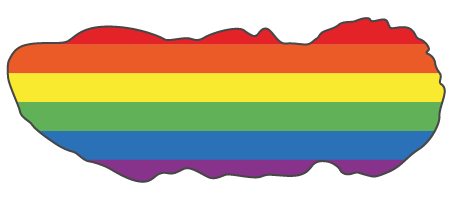
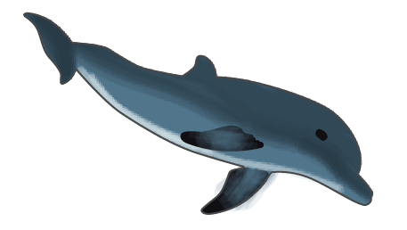
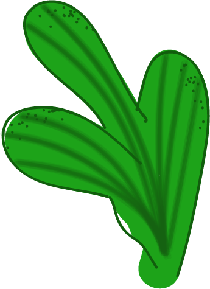
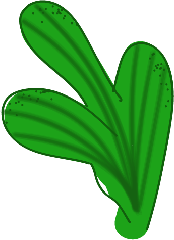

Al het leven komt uit zee. De zee is waar moeder natuur het langst met seks experimenteert. En niet zonder resultaat. Kijken naar seks in de zee leert: er is geen norm. Noem een niet-heteronormatieve gedraging of er is wel een zeebeest dat het geadopteerd heeft als geprefereerde seksstrategie.
 


Je verwacht het niet, maar er klopt geen bal van Finding Nemo, de Disneyfilm waarin clownvis Marlin zijn vrouw en kroost verliest aan een barracuda, op één babyvisje na. Enig kind Nemo belandt al snel in een plastic zakje op weg naar het aquarium van een tandarts. En vadervis zit er de rest van de film achteraan.
Als pa een échte clownvis was geweest, dan had hij na ma’s heengaan niet alleen in figuurlijke zin haar rol op zich genomen. Marlin was létterlijk getransformeerd in een vrouwtje. Meteen daarna had hij-nu-zij een nieuwe man geregeld, want: nestdrang. En die nieuwe man zou afkomstig zijn uit de harem hermafrodiete clownvisjes die Marlins wijlen eega er altijd al op nahield in hun beider woonanemoon.
Bij gebrek aan harem was het aan Nemo geweest – eveneens een hermafrodiet, zoals alle clownvissen bij geboorte – om snel te veranderen in de vent die zijn vader-toen-moeder-nu-partner behoefde. (Ja, hij zou het met z’n vader doen.) En dat verlaten van het thuisrif lijkt voorgoed van de baan. Ga er maar aan staan, Disney.

Veel papegaaivissen beginnen het leven bijvoorbeeld als vrouwtje. Tegen de tijd dat ze uit hun voegen groeien, gooien ze het over de mannelijke boeg. ‘Win-win, de kerel heeft altijd jonge bloempjes en de vrouwtjes genieten van een rijpe man.’ Maar o wee als een roestige dwergkeizervisman (Centropyge ferrugata) z’n collectie deernen verwaarloost. ‘Dan werpt het grootste vrouwtje zich op als nieuwe man des huizes en zwemt zij-nu-hij er vandoor met de harem.’

De indrukwekkendste geslachtsschakelaar is misschien wel de Catalina-grondelvis (Lythrypnus dalli), die slechts een paar dagen nodig heeft om teelballen dan wel eierstokken te groeien of reabsorberen, afhankelijk van de beschikbare sekspartners in de buurt. Hardt: ‘Echt een verbazingwekkende fysiologische capaciteit.’
Het ene vismannetje bouwt nesten, verdedigt de eitjes en ‘broedt’ op de jonkies. De ander zeult eitjes of uitgekomen vislarven oeverloos rond in zijn bek ter bescherming. Hardt: ‘En bij zeepaardjes is het zelfs de man die zwanger is en de baby’s baart!’ Een zeepaard maakt zijn dame het hof door herhaaldelijk water in en uit z’n baarmoederbuidel te pompen, om enerzijds te pronken hoeveel eitjes er wel niet in kunnen en anderzijds te tonen hoe leeg hij zich op dat moment nog voelt.
Als je een heel klein beestje bent in een grote oceaan, is de kans dat je iemand van je eigen soort tegenkomt soms óók heel klein. Dan helpt het om een hermafrodiet te zijn, zodat paren te allen tijde een optie is, wie je dan ook treft.
Zodoende komen hermafrodieten veel voor in zee. Neem de platworm. Platwormen houden er een heel scala aan tweeslachtige strategieën op na. Van heel ‘eerlijke’ – waarbij ze met eigen sperma elkaars eicellen bevruchten en soms ware sekscirkels vormen van mannelijke geslachtsorganen ingebracht in vrouwelijke delen – tot heel doortrapte. Soms doen platwormen alleen alsof ze in gelijke mate sperma inspuiten en ontvangen. Zodra de kust vrij is, vouwen ze dubbel om het sperma van de ander met de mond uit hun vrouwelijke geslachtsorgaan te zuigen.
En dan zijn er ook nog de platwormen die zwaardvechten met hun penis. Het doel: te bevruchten zonder zelf bevrucht te worden, opdat je niet opgescheept zit met de energieslurpende vrouwenrol van het opbouwen van en zorgen voor ontwikkelende eicellen. De platworm schermt met zijn spitse fallus de ander fel van zich af, in de hoop eerder te steken – en dus te insemineren – dan zelf gestoken te worden.
Zie je het al voor je in de slaapkamer?

Misschien ‘doen’ ze bi voor de lol. Zonder enige voortplantingsoverweging.
Als pa een échte clownvis was geweest, dan had hij na ma’s heengaan niet alleen in figuurlijke zin haar rol op zich genomen. Marlin was létterlijk getransformeerd in een vrouwtje. Meteen daarna had hij-nu-zij een nieuwe man geregeld, want: nestdrang. En die nieuwe man zou afkomstig zijn uit de harem hermafrodiete clownvisjes die Marlins wijlen eega er altijd al op nahield in hun beider woonanemoon.
Zoiets lijkt wel aan de hand bij biseksuele dolfijnen. Wetenschappers documenteerden hoe mannetjes elkaars anus of genitale opening (waar de penis uitkomt) penetreerden. Hardt: ‘Mogelijk creëren ze zo hechte sociale banden of onderlinge hiërarchieën.’ Dezelfde mannetjes vormen later vaak ‘bendes’, die samen leden van het vrouwelijk geslacht (soms vrij hardvinnig) trachten te bewegen tot seks. Het dolfijnenlibido is berucht.

Bij de grote Australische zeekat (Sepia apama, een inktvis) is travestie een vrij directe seksuele strategie. Kleine, sullige bètamannetjes moeten slim zijn om in de buurt te kunnen komen van het door alfa’s jaloers bewaakte vrouwelijk schoon. Dus doen ze alsof ze zelf vrouwtjes zijn, door hun kleuren wat doffer te maken en de tentakels eerbiedig in te trekken.
Het werkt, als nepvrouwtjes kunnen bèta’s zich aansluiten bij de alfaharem. Alfamannetjes verdoen dan soms hun zaad aan hen. Maar belangrijker nog: als de alfa even niet kijkt, flasht de kleine man snel zijn indrukwekkende kleurpatronen en gaat over op de bevruchting.

‘Het verhaal van de Osedax is vrij bizar’, zegt Hardt. Osedax eet het bot van beesten – met name walvissen – die wegrotten op de zeebodem. Hun lichaam is een holle buis zonder mond of darmen, die uitloopt in structuren die zich diep in de walvisbotten wortelen. In die wortels leven bacteriën, die de Osedax voeren met verteerde botresten. De Osedax zelf eet dan weer die bacteriën. Ingewikkeld.
Er was iets geks aan de hand. Elke Osedax die onderzoekers vonden had heel sterk ontwikkelde eierstokken – het waren allemaal vrouwtjes. Waar waren de mannetjes? Ze moesten ergens zijn, want in de vrouwlijven zagen onderzoekers tientallen tot honderden minuscule stipjes zitten en dat was vermoedelijk afgezet sperma, daar de stipjes rond de eierstokken hingen.
Het duurde ongeveer een jaar totdat Greg Rouse, een professor aan de Scripps Institution of Oceanography, besloot om die gekke walvisetende vrouwbeesten uit de diepzee nog eens nader te bestuderen. Hij bekeek ze onder een microscoop bij een heel erg hoge vergroting. Rouse stond paf. Die kleine stipjes waren helemaal geen sperma, het waren de mannetjes!
Rouse zag microscopisch kleine dwergmannetjes, duizenden malen kleiner dat het vrouwtje, die sperma pompten uit de top van hun hoofd. Osedaxen zaten er vol mee. (Hoe heet die seksuele voorkeur ook alweer, waarbij onderontwikkelde dwergmannetjes die rondhangen in je nier het voor je doen?)
Dát was dus hoe haar eitjes bevrucht raakten. ‘Zoiets overkomt je ook niet elke dag,’ zei Rouse tegen Hardt, ‘dat je het gehele mannetje aanziet voor een spermacel.’